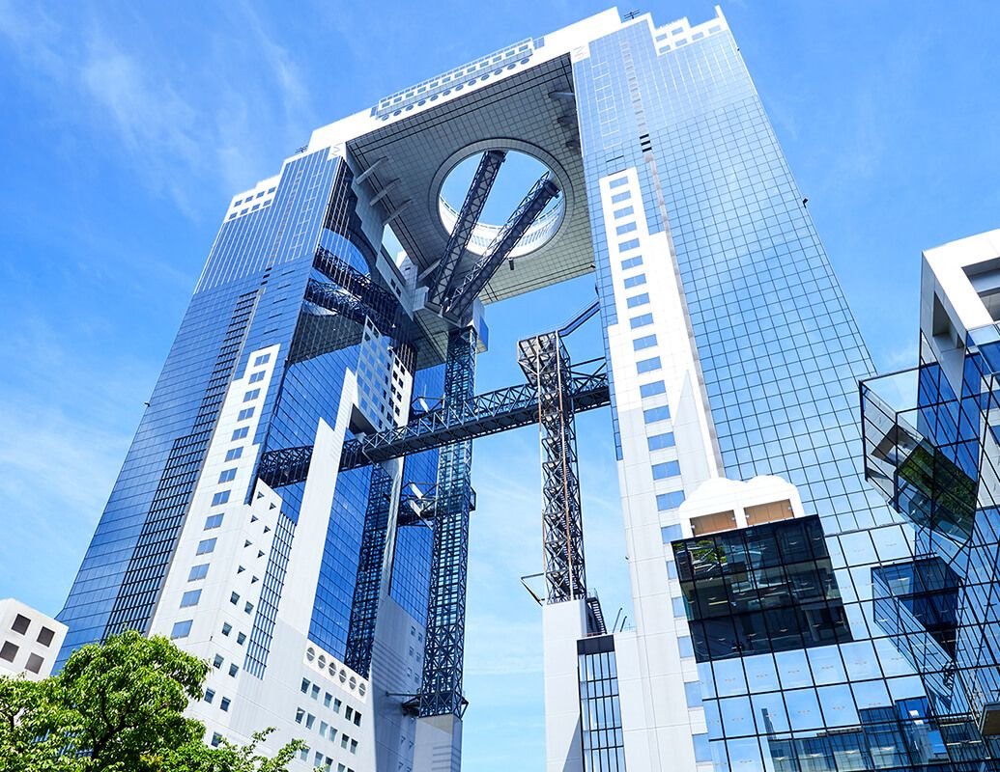

-
도쿄
일본에서 가장 유명한 도시인 도쿄. 도쿄도 도심부는 23구로 구성돼 있으며, 그 인구는 약 3,500만 명에 이른다. 세계에서 가장 바쁜 교차로로 알려진 도쿄 시부야의 ‘스크램블 교차로’는 한 번에 파란 신호를 건너는 사람이 약 3,000명을 넘어선다는 이야기도 있을 정도이며, 하루당 통과 인원이 50만 명에 달할 때도 있다고 한다.
또한 신주쿠역은 하루에 340만 명이 이용하는 세계에서 가장 혼잡한 철도역으로 알려졌다. 아키하바라는 오타쿠 문화의 중심지로 게임&애니메이션&만화 전문점이 즐비한 데다, 크고 작은 가전 판매점이 모여 일본 최대의 전기상가를 이루고 있다. 도쿄는 패션과 ‘가와이이’ 문화 유행의 발신지로 전세계에서 알려져 있는 한편, 유서 깊은 전통 문화의 흔적도 짙게 남아 있어 일년 내내 신사나 절 등에서 다양한 축제가 개최된다. 이처럼 도쿄는 옛날과 현재가 공존하는 도시다.
도쿄에는 일본 각 정부 부처, 천황이 기거하는 고쿄 등이 있다. 도쿄는 세계에서 제조업이 가장 발달한 도시이다. 또한 수많은 다국적 기업들이 도쿄에 본사 또는 지사를 두고 있으며, 세계의 게임산업, 만화와 애니메이션 산업, 영상, 디지털, 첨단산업 등의 중심지이다. 도쿄는 세계 최대의 지하철 교통망을 가지고 있으며, 세계에서 가장 큰 도시 광역권을 구성한다. 뉴욕, 런던과 함께 세계 3대 경제 수도로 불린다.
1. 도쿄 타워

도쿄 타워는 는 일본 도쿄도 미나토구에 있는 높이 333m의 종합 전파탑이다. 빨간색(또는 국제 표준 오렌지색)과 하얀색이 교차하여 도장되어 있다. 주소는 도쿄 도 미나토 구 시바코엔 4-2-8이다.
도쿄의 상징이자 관광 명소로서 널리 알려져 있다. 한동안은 일본 도쿄도에서 가장 높은 건축물이었으나, 2012년 근처에 634m의 도쿄 스카이 트리가 건설되면서 두 번째로 높은 건축물이 되었다. 일본 최고층 마천루인 오사카 아베노바시 터미널 빌딩(60층, 300m)보다 33m가 더 높다.
지상 150m 지점에 전망대가 설치되어 있으며 가격은 성인 기준 1200엔이다. 주말, 휴일 등에는 11시부터 1층에서 전망대까지 걸어서 올라갈 수도 있는데 걸어서 올라가면 인증서를 준다고 한다.
전망대에 오르면 도쿄 도내가 한눈에 내려다보이는데, 날씨가 좋을 때는 서쪽의 후지산(山), 북쪽의 쓰쿠바산(山), 남쪽의 요코하마까지 바라볼 수 있다. 타워 아래 부분인 5층 건물 풋타운(foot town) 에는 도쿄 원피스 타워, 수족관, 근대과학관, 쇼핑 아케이드 등 위락 시설이 마련되어 있다.
2. 롯폰기 힐즈

롯폰기 힐스는 일본 도쿄도 미나토구 롯폰기에 위치한 복합시설이다. 이 복합시설은 롯폰기힐즈 모리타워를 중심으로 하고 있다. 17년이 걸린 롯폰기 6가의 재개발 사업의 하나로서, 모리빌딩사가 이 복합시설을 건축하였다.
주요 시설로는 골드만삭스, 리만 브라더스 홀딩스, J-WAVE, Yahoo!Japan, 라이브도어, 라쿠텐 등의 기업들이 있으며, 모리미술관 등 문화시설이 들어와 있는 모리빌딩의 롯폰기힐즈 모리타워, TV아사히 본사, 도쿄그랜드하얏트호텔, 복합영화상영관(도호 영화사 롯폰기힐즈), 야외이벤트공간(롯폰기힐즈 아레나), 주거공간(롯폰기힐즈 레지던스, 게이트타워 레지던스 등), TSUTAYA와 루이비통 등을 비롯하여 다양한 쇼핑공간과 부띠끄, 레스토랑 등이 있다. 또한 미국인을 대상으로 한 국제학교인 American School in Japan 병설유치원이 있다.
7층부터 48층까지이다. 과거 야후 재팬, 코나미 등의 일본의 대기업들도 이 곳을 본사로 쓸 정도로 대표 고급 오피스로 유명했으나, 지금은 2007년 미드타운 타워가 완공되면서 다소 움츠러든 상태였지만 현재는 골드만 삭스, 애플, 구글 같은 회사들이 들어와있다. 포켓몬 컴퍼니도 이 건물에 위치해있다
또한, 롯폰기힐즈 모리타워에는 J-WAVE의 비상용 송신설비가 마련되어있어 도쿄타워에서 송신이 불가능하게 되어도 최대 1킬로와트 분량의 방송이 가능하다.
3. 메이지 신궁

일본 도쿄도 시부야구 요요기 구역에 위치한 신궁. 메이지 덴노와 쇼켄 황후 부부를 제신(祭神)으로 받든다.
신궁에서 동쪽으로 가면 메이지 신궁 야구장 옆에 메이지 신궁 외원(明治神宮外苑)이란 시설이 나온다. 메이지 천황이 사망했을 당시에는 군대의 연병장이었는데, 여기에 천황의 시신을 운구하여 장례식을 치른 이후로 메이지 천황을 기념하는 공원처럼 되었고, 메이지 신궁 창건 이후로는 신궁의 부속시설이 되었다.
일본에서 새해 첫 참배 스팟으로 유명한 곳으로, 하츠모데 풍경 등이 뉴스에 나올 때는 항상 이곳이나 가마쿠라의 모습이 나온다.
신사 내에는 와인과 청주가 가득 담긴 통들이 있다.청주는 신사 내 행사 때 쓰려고 각 양조업체에서 기증한 것들이고, 와인은 생전에 와인을 좋아한 메이지 덴노를 추모하기 위해 부르고뉴에서 기증받은 것들이다.
전통 결혼식 혼례장으로도 꽤 쓰인다. 일요일 오전 10시 혹은 11시에 가면 전통혼례식의 시작 혹은 끝을 볼 수 있다.
4. 센소지
일본 도쿄도 23구의 지명 중 하나. 관동 대지진으로 사라질 뻔 했으나, 현재는 복구되어 관광지이자 랜드마크로 유명하다. 특히 일본의 "시타마치(下町)의 정서, 서민 동네 분위기를 즐길 수 있는 곳이다. 센소지라는 절이 유명하며, 센소지의 정문에 걸린 크고 아름다운 붉은 등이 트레이드 마크다.
거리를 걷다 보면 기모노나 유카타를 입은 사람들이 많이 보이고 간혹 게이샤, 마이코나 오이란 분장을 한 사람들도 보이는데, 주변에 기모노나 유카타를 입어보거나 게이샤, 마이코, 오이란 분장 체험을 해볼 수 있는 가게들이 많기 때문이다. 남자들은 보통 남성용 기모노나 사무라이 분장을 많이 하는데, 보수적인 교토와는 달리 남자들의 여장 체험에 대해서도 대체로 관대한 편이다. 보통 가게들에서 옷을 갈아입고 가게 내 스튜디오에서 사진을 찍고, 추가 비용을 내면 근처 센소지나 주변을 걷거나 인력거를 타며 외출해볼 수 있다. 신발 또한 일본식 게다로 갈아신는다.
매년 7월 넷째 주 토요일에는 아사쿠사 동쪽에 있는 스미다 강에서 스미다강 불꽃대회가 펼쳐진다. 스미다강 불꽃대회는 일본을 대표하는 불꽃놀이 행사 중 하나로 널리 알려져 있으며, 이 축제가 열리는 동안 아사쿠사 전체와 도쿄 스카이트리는 인파로 가득 찬다. 단, 7월 넷째 주 토요일에 비가 올 경우 그 해의 불꽃놀이는 취소된다.
가까운 곳에는 도쿄 스카이트리가 있는데 아사쿠사를 거닐다 보면 보인다. 반대로 도쿄 스카이트리에서도 센소지가 아주 잘 보인다. 입구에 있는 노점에서 닌교야키라는 작은 빵을 파는데, 델리만쥬와 비슷한 빵이다. 차이점은 델리만쥬는 옥수수 모양인 반면 닌교야키는 사람 모양인 점, 닌교야키 속에는 커스터드 크림이 들어 있지 않다는 점이다.
5. 스카이 트리
일본 도쿄도 스미다구에 있는 전파 송출용 탑이다. 600m를 훌쩍 넘는 높이이다. 350m 전망대에 레스토랑, 가게 등의 시설이, 450m 특별전망대가 존재한다. 참고로 350m 전망대에서 한층 내려가면 340m 전망대가 있는데, 몇몇 곳에서 유리로 된 공중복도를 설치하여 공중을 걷는 듯한 체험을 할 수 있다고 한다.
직접 방문해보면 공중복도는 아니고 그냥 2군데 정도 바닥에 투명한 창을 설치해두었는데 하나는 일반 관객 전용, 또 하나는 촬영 전용으로 줄을 서면 직원이 사진을 자체 카메라 및 원하는 손님의 경우 손님의 스마트폰으로 사진을 찍어준다. 자체 카메라로 찍은 사진은 추후에 구입해도 되고 안해도 된다. 그리고 바닥의 투명창은 그 아래 다른 구조물이 겹겹이 막혀있어 그 개방감은 의외로 크지 않다.
지하에는 스미다 아쿠아리움이라는 작은 아쿠아리움이 붙어있는데, 말 그대로 정말 작은 아쿠아리움인지라 큰 기대는 하지 않는 것이 좋다. 그러나 물생활을 좀 하는 사람에게라면 이야기가 달라지는데, 세계적인 아쿠아스케이핑 업체인 ADA와 콜라보를 해서 수준급으로 스케이핑된 수조들을 볼 수 있어 매우 알차게 느껴진다.
6. 하마리큐 별궁 온시 정원

하마리큐 별궁 온시 정원은 중앙의 연못을 빙 둘러 건조물들이 세워져 있다. 연못 한가운데는 찻집으로 일년 내내 편안하게 녹차를 마실 수 있다. 이 정원의 연못은 바다로 이어져 있어 조수간만에 따라 바닷물이 들어왔다 나갔다 하기 때문에 항상 유동적이다.
도심 한가운데 위치한 것에 비해 제법 규모가 큰 편이다. 여려 종류의 식물과 동물이 살고 있으면 공원 내의 호수가 정취를 더해준다.
정원 전체에 매화와 벚꽃 나무들이 심어져 있어 봄이 되면 꽃이 활짝 핀다. 10월 하순부터 11월 중순에 걸쳐 절정을 맞이하는 단풍도 볼거리 중 하나이다.
하마리큐 별궁 온시 정원은 1946년 4월에 일반 공개되었지만, 그 이전까지는 수세기 동안 고관대작이나 왕실의 별장으로 사용되었습니다. 이 정원은 11대 장군 도쿠가와 이에나리의 지휘 아래 완성되었다. 1868년의 메이지 유신 이후 1945년 도쿄도에 하사될 때까지는 왕실의 별궁이었다.
-
오사카
오사카는 도쿄에서 신칸센을 타면 금방 도착하지만, 수도인 도쿄와는 사뭇 다른 개성을 느낄 수 있습니다. 고속열차에서 내리는 순간 흥겨운 밤놀이 문화와 맛있는 음식, 직설적이지만 친근한 주민을 만날 수 있는 새로운 세상이 펼쳐집니다.
오사카에는 쇼핑 명소를 비롯한 현대 명물도 물론 많지만, 오랜 역사를 엿볼 수 있는 측면도 있습니다. 그중 가장 대표적인 예가 오사카성입니다. 오사카성은 일본 역사에 대해 좀 더 심층적으로 알아볼 수 있는 배움의 현장으로서도 좋은 곳이지만, 특히 벚꽃이 피고 날씨도 연중 가장 온화한 4월 벚꽃 철이면 경내가 매우 아름다워 그냥 걸어서 둘러보기만 해도 좋습니다.
4세기에 나니와 궁이 놓여진 이후 약 1600년 이상의 역사를 가지고 있으며 현재는 상업과 해외여행 등이 활발하고 있으며 주간 인구는 도쿄 23구 다음으로 일본 전국에서 2위, 야간 인구는 요코하마시 다음으로 3위이다. 1956년에 일본에서 처음으로 정령지정도시로 지정되었다. 간토 지방이 아닌 지방에서는 제일 많으며, 재일 한국인들이 많이 모여사는 곳이다.
1. 오사카 성
오사카 성은 셋쓰 국 히가시나리 군 오사카에 있었던 아즈치모모야마 시대부터 에도 시대의 성이다. 다른 이름은 긴조(金城) 혹은 긴조(錦城)로, 과거에는 오사카(大坂)가 근대에 와서 오사카(大阪)로 표기하도록 개정되었기 때문에, 현재에는 오사카(大阪)라고 많이 표기하고 있다.
또, 과거에는 오자카라고 읽었지만, 현재에는 오사카로 많이 읽힌다. 도요토미 정권의 본성으로 있었지만, 오사카 전투에서 소실되었다. 그리고 그 후, 에도 시대에 재건을 해 에도 막부의 서일본 지배의 거점으로 삼았다. 성이 있는 곳은 현재 오사카부 오사카시 주오구의 오사카조 공원 (大阪城公園)이다. 구마모토 성, 나고야 성과 더불어 일본 3대 명성중 하나이다.
지금의 오사카 성 천수각은 겉으로는 그럴 듯하지만 실체는 철근 콘크리트 구조물로, 엘리베이터까지 들어가 있다. 외관은 화려하지만 실은 4층까지는 도쿠가와 시대, 5층은 도요토미 시대의 천수각으로 혼합하여 복원해 고증오류가 심하다. 그래서 일본에서는 외관만 성이고 내부는 현대라고 말한다. 내부의 전시 공간은 유물 내용도 다소 부실하고 사진 촬영도 금지되어 있어 차라리 주변에 있는 오사카역사박물관을 방문하는 것이 나을 수도 있다. 천수각 자체는 오사카시에서 운영하는 박물관이며 전시는 부실하지만 거기서 파는 전시 도록은 꽤나 훌륭한 편이다. 천수각 주변에는 옛 오사카 시립 박물관 건물이 있다. 이 건물은 원래는 오사카 성에 자리잡았던 제4사단 본부 건물로, 1931년 천수각 재건과 함께 성내의 사단 본부대 소속 건물들을 집약하면서 건축되었고, 1948년부터 1958년까지는 오사카부 경찰청사로 이용되었다. 1960년 이후에는 박물관으로 쓰이다가 2001년 오사카 역사 박물관 개관과 함께 폐관되었다. 현재는 기념품 가게와 레스토랑으로 사용되고 있다.
그냥 공원은 무료 입장이지만 천수각에 들어가려면 입장료를 내야 한다. 입장료가 성인 600엔. 중학생 이하 무료(신분증 제시해야 함). 스룻토 간사이 패스를 제시하면 500엔이다. 2014년 이후 아베노믹스로 인해 100엔당 1050원도 안되는 상황이 지속되어 많이 저렴해진 편으로 특히 오사카 주유 패스(헵파이브 대관람차도 탑승 가능)를 사용 시 무료로 입장 가능하다. 천수각 3~4층 내에서는 사진 촬영이 불가능하다.
2. 도톤보리
도톤보리는 일본 오사카부 오사카시 주오구의 지명으로, 이 지역의 북쪽을 흐르는 도톤보리강의 약어이기도 하다. 도톤보리는 과거에는 극장이 밀집된 지역이었으나, 현재는 밤문화와 오락시설이 밀집된 지역으로 변모했다. 오사카의 제과회사인 에자키 글리코의 피니싱 라인을 통과하는 달리는 남성의 광고판이 랜드마크로 유명하다.
곳을 방문하는 사람들은 거대한 게와 복어 조형물 그리고 드럼을 연주하는 마네킹, 도톤보리 거리의 레스토랑들이 자랑하는 흥미진진한 간판들을 볼 수 있다. 이 곳에서 쿠이다오레의 진정한 의미를 경험할 수 있으며, 합리적인 가격으로 만족할 때까지 오사카 최고의 맛을 만끽 할 수 있다. 그리고 거리의 연주가들과 예술가들을 위한 "나니와워터프론트 극장가"가 현재 강을 따라 건설 중이다. 완성되면 이곳은 도시와 강이 만나는 장소, 좀 더 활기차고 생명력 넘치는 오사카의 심벌로 거듭날 것이다.
3. 유니버설 스튜디오 재팬
일본 오사카에 위치한 유니버설 스튜디오 테마파크. 약칭은 USJ. 유니버설 스튜디오 재팬은 유니버설 파크앤 리조트의 유니버설 스튜디오 중 하나로 일본 오사카시에 있으며, 2001년 3월 31일 토요일에 개장했다. 일본에서 드림랜드와 같이 다른 테마파크들이 줄줄이 망하는 상황에서도 대형업체가 운영한다는 점으로 말미암아 크나큰 성공을 거둔 테마파크다. 현재 아시아에서 도쿄 디즈니 리조트에 이어 방문자 수 2위를 기록하는 테마파크로, 연간 방문객 수가 1,500만여 명에 달한다. 한국에서 가장 가까운 유니버설 스튜디오이기도 하다.
입장료는 성인이 7900엔 정도로, 한국의 테마파크에 비해 꽤 비싼 편이지만, 유니버설 스튜디오 자체가 그렇 듯이, 어느 나라를 가도 이 정도로 비싼 편이고, 그만큼의 값어치를 한다. 때문에, 막상 들어가보면 입장료가 그리 비싸게 느껴지진 않을 것이다.
각 어트랙션에 관한 정확하고 자세한 설명은
여길 클릭해 보면 된다.4. 공중정원 전망대
일본 오사카부 오사카시 키타구에 있는 마천루로 인근을 오사카의 명소로 개발하는 이른바 신 우메다 시티 프로젝트의 일부이다. 오사카의 신흥 업무지구로 발달한 신오사카와 우메다 일대에서 가장 높은 건물로 위용을 자랑하는 오사카의 야경 명소였으나 2014년 오사카 남쪽에 더욱 높은 아베노하루카스가 개장해버렸다.
건물 안에는 영화관과 식당가, 웨딩홀 등이 입점해 있다. 물론 가장 널리 알려진 것은 꼭대기의 공중정원 전망대. 오사카 주유패스의 무료입장 혜택을 받을 수 있어 많은 관광객이 찾아온다. 패스가 없을시 입장료는 성인 1명 기준 2020년 2월 현재 1,500엔. 오사카 주유패스 무료입장은 18:00시까지이므로 겨울이 아니면 야경을 보기는 어렵다. 공중정원 전망대는 전일본 타워 협의회에 가입되어 있다.
공중정원은 두 건물이 꼭대기에서 이어지는 곳에 있는데, 40층 위 꼭대기 부분을 스카이 워크라고 하며 여기에서는 지붕이 없는 옥상 그대로의 풍경을 즐길 수 있다. 40층에서는 벤치에 앉아 유리 너머로 우메다 지역을 바라볼 수 있다. 해질 무렵 입장하여 느긋하게 낙조와 야경을 즐기기에 좋다.40층에서는 벤치에 앉아 유리 너머로 우메다 지역을 바라볼 수 있다. 해질 무렵 입장하여 느긋하게 낙조와 야경을 즐기기에 좋다.
지하 식당가에 맛집이 많다. 모던야키를 처음 만든 키지라거나. 그리고 거기서 저녁을 먹으면 공중정원 입장료 할인티켓을 받을 수 있으니 꼭 챙기자.
5. 스미요시타이샤
스미요시타이샤는 일본 오사카부 오사카시 스미요시구 스미요시에 있는 신사이다. 일본 전국에 있는 스미요시 신사의 총본사이다. 신사의 4개 건물이 스미요시즈쿠리로 불리는 고대 일본의 건축 양식으로 국보로 지정되어 있다.
스미요시 타이샤 신사는 일본 최고로 정평이 난 절경을 자랑한다. 이 신사는 아시아 대륙의 건축 양식이 일본에 유입되기 전 세워진 건물이다. 부지의 남쪽 끝에는 사찰 관리소에서 원형 그대로 보존 중인 한 구획의 논이 있으며, 이곳에서 근대화 이전 일본의 모습을 짐작해볼 수 있다.
더 알고 싶다면
여길 클릭해 보면 된다.6. 가이유칸
일본 오사카시 미나토구 템포잔에 위치한 수족관이다. 1990년 7월 20일 개관했으며 개관 당시 동아시아 최대규모의 시설을 자랑했지만 현재는 한국 최대 규모의 아쿠아플라넷 제주(2012년 개관)와 일본 최대 규모의 오키나와 추라우미 수족관(2002년 개관) 등에 순위가 밀려 단일 수조규모 일본 2위, 건물 연면적 규모 일본 2위, 연간 관람객 수 일본 3위에 머물러있다. 하지만 여전히 세계적인 수족관 중 하나이다.
여기서 여객선 캡틴 라인호를 타고 유니버설 스튜디오 재팬으로 갈 수 있다. 당연히 왕복 운행이라 USJ에서 이쪽으로 오는 것도 가능하다. 대략 1시간에 1~2회 정도 운항하며 실제 탑승 시간은 편도 10분 정도다. 캡틴 라인 티켓을 구매할 때 가이유칸 티켓을 함께 구입하면 할인 혜택이 있다. 따로 구매하더라도 캡틴 라인 티켓에 할인 쿠폰이 붙어있기 때문에 할인 혜택은 그대로 받을 수 있으며, 앞서 언급한 대관람차 할인 티켓도 붙어있으니 잊지말고 이용하도록 하자.
총 8층으로 이뤄져있는데 1, 2층은 안내소 및 상점, 레스토랑, 코인로커 등이 위치해 있고 3~8층이 관람구역이다. 홈페이지에 동물들의 밥 먹는 시간이 공지되어 있는데 시간맞추어 가면 아주 볼만하다. 돌고래같은 경우에는 사육사들과 함께 장난치고 재주를 부리는 모습을 볼 수 있는데, 홀린듯이 보다보면 1시간이 훌쩍 지나가있다. 밥을 가지고 사육사들이 들어오면 신나서 점프를 해대는 돌고래들의 모습이 귀여우니 일찍 가서 보는것을 추천한다. 고래상어가 밥먹는 모습도 장관인데, 그 큰 고래상어가 세로로 서서 밥과 물을 흡입하는 과정을 보면 입이 저절로 벌어진다. 여러 수중 생물들이 밥 먹는 걸 구경하다 보면 정말 시간이 훌쩍 간다. 이럴 경우 최소 4시간은 잡고 관람 계획을 짜야한다.
오사카나 인근 도시에서 전철·지하철로 찾아갈 때에는 오사카 가이유 깃푸를 사는 것이 좋다. 전철·지하철 1일승차권과 가이유칸 입장권이 한 장의 카드에 포함되어 있는 티켓이다. 예컨대 오사카시내 판(版)의 가격은 2,600엔인데, 가이유칸 입장권만 2,300엔이고 지하철 요금도 구간에 따라 편도 180~370엔씩이니, 지하철로 1회 왕복만 해도 이득이며 1일승차권 기능이 있으므로 훨씬 더 남겨먹을(?) 수도 있다. 오사카메트로뿐 아니라, 한큐, 케이한, 난카이, 키타큐, 긴테츠, 센보쿠, 신테츠, 노세, 한신 등 인근의 다른 사철 회사와 연계된 티켓도 있다. 가격은 모두 합리적인 편.
-
히로시마
히로시마현은 일본 혼슈 섬 서남부의 주고쿠 지방에 있는 현이다. 현청 소재지는 히로시마시이다.
1945년에 세계에서 처음으로 원자폭탄이 투하된 곳인 히로시마. 그 직후에 도시를 직격한 마쿠라자키 태풍으로도 큰 피해를 입었다. 히로시마는 이렇듯 갖은 비극을 이겨내고 현재의 모습을 일궈냈다. 황폐해진 거리, 파괴된 건물은 이후에 재건&신축되어 1949년에는 일본 국회에서 ‘평화기념도시’ 선언이 이뤄졌다.
히로시마평화기념공원은 부흥도시의 상징이 되었고 그 이외에도 평화를 위한 수많은 시설이 존재한다. 수면 위에 떠 있는 도리이가 인상적인 아쓰쿠시마 신사에 히로시마성, 슈켄엔 등 꼭 한번은 가보고싶은 장소가 많다.
1. 히로시마평화기념공원
히로시마평화기념공원은 히로시마현 히로시마시 나카구에 위치한 공원이다. 세계 최초로 원자폭탄이 투하된 히로시마에서 세계의 평화를 기원하는 의미에서 조성되었다. 원폭 사망자 위령비, 원폭 공양탑, 평화의 종, 원폭 어린이의 상 등의 건축물이 있다. 남쪽에 히로시마 평화기념자료관, 북동쪽에 원폭 돔이 있다.
1970년 4월 10일에 재일본대한민국거류민단 히로시마 현 본부에 의해 ‘한국인 원폭 희생자 위령비’가 건립되었다. 비석 전면의 표제는 국회의장 이효상, 뒷면의 비문은 국문학자이자 서울대학교 교수 한갑수가 찬하였다.
히로시마시의 반대로 위령비의 히로시마 평화기념공원 내 건립이 어려워지자 이우가 피폭을 당한 후 발견된 장소였던 히로시마 혼가와의 아이오이 교 근처에 세워졌다. 1999년 7월 21일에 위령비는 히로시마 평화기념공원 안으로 이전되었다.
더 자세히 알고 싶다면
여길 클릭해 보면 된다.2. 히로시마성
히로시마성은 히로시마현 히로시마시 나카구 모토 정에 있는 윤곽식 평성이다. 히로시마 성 전역은 히로시마 성지공원으로 정비되어 있으며, 국가 지정 사적이다. 복원된 대천수는 역사박물관으로 사용되고 있다. 히로시마 시 중앙공원과 인접해 있다. 히로시마 성의 별명은 리조(鯉城: 잉어 성)이다.
그리고 도요토미 히데요시[豊臣秀吉]를 섬긴 무장으로 5대로중에 하나였던 모우리 데루모토[毛利輝元]가 세운, 전형적 형태로 평지에 축조한 성이다. 일본 에도(江戶) 시대, 후쿠시마가[福島家], 그후에 아사노가[浅野家]가 이 성에서 살았다. 이 천수각은 1931년에 일본 국보로 지정되었다. 원자 폭탄에 의해 파괴되었습니다만, 이후 1958년에 성의 외부는 수복되었다. 1989년에는 내부가 복원되어, 오늘날 이 곳은 무가 문화[武家文化]를 중심으로 소개하는 역사 박물관이 되어 있다.
3. 세계평화기념성당
세계평화기념성당
원자폭탄과 전쟁 희생자에 대한 애도와 세계평화기원을 목적으로 건설된 기독교 교회당(가톨릭 노보리초(幟町) 교회)이다. 히로시마에서 피폭한 에노미야 라사루 신부가 로마 교황을 비롯한 전 세계인들로부터 협력을 받아 1950년 8월 6일에 착공, 5년의 세월을 거쳐 1954년 8월 6일에 준공해 '세계평화기념성당'이라고 이름 지었다. 설계는 히타치노미야 저택이나 효교현 다카라즈카시 시청을 설계한 무라노 도고이며 전후 건축물로서 처음으로 평화기념자료관과 함께 중요문화재로 지정되었다.
4. 이쓰쿠시마 신사

이쓰쿠시마 신사는 히로시마현 하쓰카이치시의 이쓰쿠시마 섬(미야지마 섬)에 있는 신사이다. 바다 한가운데에 있는 도리이로 유명하다. 헤이안 시대 말에 다이라노 기요모리(平清盛)가 세운 1400년의 역사를 갖는 신사로 1996년에는 세계유산으로 지정되었다. 신사가 있는 이쓰쿠시마 섬은 "아키노 미야지마"(安芸の宮島)라고 불리며 일본 삼경(日本三景)의 하나이다.
이쓰쿠시마 신사는 일본에서 가장 유명한 관광지 중 하나이다. 신사의 정면에 세워져 있는 도리이의 극적인 모습, 미센 산의 성스러운 봉우리, 아름다운 바다 풍경 때문에 그 유명세가 더욱 커지기도 하였다. 신사 건물은 크게 2개로 나뉘는데, 첫 번째가 혼샤 신사이고 두 번째가 세샤 마로도 신사이다. 그 외에도 17개의 부속 건물들이 있어 이들을 구분짓거나 연결하는 역할들을 하고 있다.
히로시마 시내에서 출발할 경우 전철을 타고 미야지마구치역까지 가는 방법, 히로덴니시히로시마역에서 출발하는 노면 전차를 타고 히로덴미야지마구치역까지 가는 방법이 있다. 전철은 2~30분, 노면 전차는 4~50분 가량 소요된다.
미야지마구치의 선착장에서 섬으로 들어가는 페리는 미야지마 연락선과 미야지마 항로의 두 가지가 있는데 가격은 둘 다 편도 180엔, 15분 간격으로 운행하며, 섬까지는 10분 가량 소요된다. 미야지마 연락선은 JR 계열이고 미야지마 항로는 히로시마 전철 계열이므로 JR패스나 청춘 18 티켓을 샀다면 미야지마 연락선을, 히로시마 전철의 원데이 여행 카드를 샀다면 미야지마 항로를 타면 된다. 패스가 있다면 페리는 무료로 이용할 수 있다.
-
요코하마
요코하마시는 일본 가나가와현 동부에 있는 현청 소재지이다. 6개의 대도시권 중 하나이며 도쿄 대도시권에 속한다. 시의 인구는 375.7만명이고 일본의 시정촌에서 가장 높고 시의 과반은 무사시국에 속했으며 남서부 쪽 사가미국 가마쿠라군의 해당 지역은 도쓰카구, 이즈미구、사카에구、 세야구 전역과 고난구 미나미구、가나자와구의 일부이다.
1859년에 일본에서 정식으로 개항한 항구로 알려졌으며, 이 거리의 얼굴이라 할 수 있는 아카렌가 창고 등의 건축 형태나 19세기에 이곳에 자리잡은 중국 이민에 의해 형성된 요코하마 차이나타운 등 국제사회로부터의 영향이 지금의 요코하마를 만들었다고 해도 과언이 아니다.
가나가와현은 일본에서 도쿄 다음으로 인구가 많은 지방 도시다. 요코하마를 찾은 관광객은 수상 버스나 거대 관람차 등을 타고 항구의 풍경을 즐기거나 미술관&박물관 관광 및 쇼핑을 즐긴다.
1. 요코하마 차이나타운

요코하마 차이나타운는 일본 가나가와현 요코하마시에 위치한 차이나타운이다. 1866년 요코하마의 외국인거류지의 일각에 중국인 무역상들에 의해 세워진 관제묘, 중국인회관 및 중화학교 등이 시설이 들어선 것을 그 시초로 보면 150년 남짓의 역사를 갖는다.
고베 차이나타운, 나가사키 차이나타운과 더불어 일본의 '3대 중화가'의 하나로 꼽히며, 동아시아에서도 가장 큰 것으로 알려져 있고, 세계적으로도 대규모의 차이나타운 중 하나이다. 이곳에는 200개 이상의 음식점들이 위치하고 있다(다만, 다른 상점들은 이 수치에 포함되지 않는다). 이곳을 찾는 사람들은 중국인보다도 일본인이나 유럽인이 훨씬 많은데 이는 다른 나라의 차이나타운 뿐 아니라 같은 일본 내의 차이나타운인 고베, 나가사키 등에서도 보기 힘든 예라고 한다. 유명한 명소로 관우묘가 있다.
요코하마 차이나타운은 기차, 버스, seabus, 자동차를 타고 갈 수 있다.
더 자세히 알고 싶다면
여길 클릭해 보면 된다.2. 라멘 박물관

라멘 박물관은 일본 가나가와현 요코하마시 고호쿠구 신요코하마에 있는 라멘 푸드 테마파크이다. 8개의 라멘 가게들이 있어 라멘을 먹을 수 있으며, 1층 전시 갤러리에는 라멘에 관한 정보가 있다.
1994년 3월 6일에 개관한 테마파크 박물관으로 신요코하마 역 북쪽 출구에서 도보로 몇 분 거리에 위치해 . 관장은 이와오카 요지 (岩岡洋志)이다. 닛신 치킨라멘이 출시된 1958년 거리 풍경을 재현한 푸드 테마파크로서, 쇼와 시대 초창기의 나니와 거리를 재현했던 오사카 우메다 스카이 빌딩의 기미코지 (1993년 개관)와 함께일본 전국 각지의 푸드 테마파크와 쇼핑몰 등의 가게를 엄선한 '미니 푸드 테마파크'가 탄생하는 계기가 되었다.
박물관 내부는 '비행기를 타지 않고도 전국 각지의 라멘을 먹으러 간다'는 컨셉을 가지고 가상의 동네 '츠루카메초', '렌게초', '나루토초'로 나뉘는 라면 도시로 꾸며져 있으며, 쇼와 시대의 향수가 물씬 느껴지도록 구성되어 있다. 박물관의 직원과 종업원도 '동네 주민'으로 일한다는 컨셉이다. 박물관 1층의 프롤로그실에서는 라멘에 관한 전시와 뮤지엄 샵이 있고, 지하 1,2층은 체험존으로 일본 전국 각지의 라멘을 먹을 수 있다.
라멘 가게 외에도 박물관 지하 1층에는 막과자가게와 찻집, 군것질 가게가 있으며 지하 2층의 츠루카메 공원 (이벤트 광장)에서는 각종 이벤트는 물론 술과 가벼운 안주를 제공하는 노점도 들어서 있다
3. 마린 타워

마린 타워일본 가나가와현 요코하마시에 있는 등대로, 요코하마 항의 상징이자, 길이는 106m이다. 요코하마 개항 100주년을 기념에 1961년에 만들어졌으며, 실제로 기네스 북에도 가장 높은 등대로 등재되어 있지만, 2008년 9월 1일부터는 등대로서의 기능은 하지 않고 있다. 지상 100m 높이에 전망대가 설치되어 있어 요코하마 시가지를 비롯한 태평양의 경치를 볼 수 있다.
타워 안에는 마린타워 고유의 상품과 요코하마 관련 상품을 판매하는 상점, 제철 식자재로 만든 메뉴를 제공하는 레스토랑과 카페, 여유로운 분위기가 흐르는 바 등이 들어서 있다. 29층 및 30층은 전망층으로, 이곳에 올라서면 미나토미라이21 지구와 요코하마 베이브리지가 한눈에 보이며, 날씨가 좋을 때는 후지 산과 스카이트리까지 내다보인다. 미나토미라이 선 '모토마치·주카가이' 역에서 도보 1분.
4. 요코하마 미술관

석조의 좌우 대칭형 외관이 특징인 요코하마 미술관의 건물은 일본을 대표하는 건축가 고(故) 단게 겐조가 설계했다. 좌우 180미터의 정면부에는 긴 콜로네이드가 펼쳐져 있다. 8층의 반원기둥이 눈길을 끄는 중심부를 기점으로 전시실, 오른쪽 끝 건물에는 아틀리에, 왼쪽 끝 건물에는 미술정보센터가 배치되어 건물이 미술관의 이념인 '감상', '창작', '학습'을 상징하고 있다.
화강암을 아끼지 않고 사용한 높이 약 20미터의 천장이 트인 널찍한 입구 현관과 좌우 약 100미터에 이르는 계단 형태의 전시 공간으로 이루어진, 요코하마 미술관의 상징이라고도 할 수 있는 공간이다. 입구 현관에서는 많은 고객을 맞이하는 이벤트와 리셉션도 개최하고 있다.
더 자세히 알고 싶다면
여길 클릭해 보면 된다. -
오키나와
오키나와은 일본 최남단에 있는 현으로 오키나와섬을 포함한 류큐 제도를 관할한다. 현청 소재지는 오키나와 섬의 가장 큰 도시는 나하시(那覇市)이다.
160개의 섬으로 이뤄진 오키나와. 아열대 기후가 특징으로, 진귀한 동식물도 다수 생식 중이다. 하얀 해변에 코발트빛으로 빛나는 바다, 형형색색의 물고기들. 일본에 있으면서도 스노클링, 스킨스쿠버다이빙을 만끽 할 수 있는 곳이다. 류큐라는 옛 이름으로도 알려진 섬들에는 독자적인 문화가 아직도 남아 있어, 일본의 또다른 전통문화를 엿볼 수 있다.
오키나와 현은 40개의 유인도와 수많은 무인도로 이루어져 있다. 0.01제곱킬로미터 이상의 면적을 가진 섬은 160개이다. 최동단으로부터 최서단까지의 거리는 약 1,000킬로미터이며 최북단에서 최남단까지의 거리는 약 400킬로미터이다.
1. 슈리성
슈리성은 일본 오키나와현 나하시에 있는 성으로, 예전에는 해외 무역의 거점인 나하항을 내려보는 언덕에 있었다.
오키나와에서 가장 규모가 크고 볼 만한 역사 유적이며 일본이나 한국, 중국과는 비슷한 듯 하면서도 다른 독자적인 양식을 볼 수 있어 오키나와 본섬 여행을 간다면 거의 반드시 한번쯤 들르게 되는 장소이기도 하다. 오키나와 도시 모노레일선 슈리역이나 그 앞 역인 기보역에서 도보 5분 정도 거리인데 경사가 약간 있어 편한 복장으로 가는 것이 좋다. 모노레일을 통해 나하 공항 및 도심과 직접 연결된다. 입장료는 820엔이다.
2000년 12월에 타마우둔과 함께 유네스코 세계유산으로 등록되었다.
2. 오키나와평화기념당
이곳은 이름그대로 평화롭기 그지 없다. 하지만 오키나와에서의 전쟁의 처참함을 간직하고 있는 곳이다. 평화 위령탑, 한국인 평화 위령비, 평화기념 자료관, 평화의 초석(비석) 등이 있다. 상당히 넓은 곳이니, 천천히 둘러보시면 좋다. 일본인 한국인 가리지 않고 전쟁에 희생된 모든 사람들을 추모하는 공간이다.
평화기념당은 평화 기념 안의 가장 제일 높은 곳에 위치하여 있다. 평화기념당 앞에 가면 우측에 먼저 평화의 종이 보인다. 좌측에는 소년상이 있다. 이곳의 안에는 불상과, 일본인 화가의 여러 미술 작품들이 전시되어 있다. 이곳을 나오면 나비원이 있으며 뒤쪽으로는 숲이 있다. 숲에는 평화의용과 불상이 있다. 시원한 기분을 느끼면서 숲에 가보셔도 나쁘지 않다.
자세한 설명은
여길 클릭해 보면 된다.3. 세이화우타키
세이화우타키
우타키（御嶽）란 성역 공간으로, 참배의 장소이다. 세이화우타키는 류큐왕국에서 최고로 격식이 높은 성지, 인공적 건조물이 아닌 울창한 나무와 자연 그대로의 석산을, 신이 머무는 곳이라 하여 경배해 왔다. 예전에는 금남 지역으로, 비록 국왕이라 해도 여장을 할 필요가 있었다고 전해지고 있다.
세이화우타키의 입구라 할 수 있는 「우조구치（御門口）」에서 돌층계의 참배 길을 올라가면 우뚝 솟은 거대한 바위가 있다. 이곳이 최초의 참배 장소로 아주 큰 방이라는 의미의 「우후구이（大庫理）」이다. 더 안으로 들어가면 부엌의 신이라 하는 「불의 신」을 모신 「윤이치（寄満）」가 있습니다. 슈리성에서는 국왕의 식사를 만드는 주방의 명칭이다. 그리고 가장 안쪽의 참배 장소는 2개의 거대한 바위가 서로 기대어 생긴 삼각의 공간 「산구이（三庫理）」. 그 옆에는 2개의 종유석에서 떨어지는 물방울을 받기 위해 항아리가 놓여 있다. 이 물은 신성한 물로서 정월의 의식 등에 사용되었다.
4. 츄라우미 수족관

츄라우미 수족관은 오키나와의 가장 큰 관광지 이자 상징이다. 매년 270만명 이상의 관광객이 찾는 곳으로 세계에서 두번째로 큰 해양파크이다. 수족관의 인기스타, 고래상어의 신비로움과 웅장함에 즐겁지만, 사실 수족관 자체만으로는 강남 코엑스 수족관과 크게 차이를 느끼지는 못한다. 다만 츄라우미 수족관을 포함한 해양박공원이 핵심인데, 이곳의 다채로운 볼거리와 즐거움으로 가족을 동반한 여행객에게는 추천하고 싶은 요소가 많다.
필자가 방문한 5월은 무더운 날씨에 사실 주변을 둘러보기가 싶지 않았는데, 그럼에도 불구하고 쨍한 날씨에 푸른빛 바다를 보너라면 그늘 밖으로 연인, 가족과 걷고 싶어지고 싶을때도 있다. 츄라우미 수족관외에도 돌고래 공연장, 바다거북관, 열대드림센터 등이 위치해 있어 2-3시간 시간적 여유를 두고 방문하면 좋다.
-
삿포로
삿포로는 일본 홋카이도의 도오지방에 위치하고 이시카리 진흥국에 속한다. 도청 소재지의 이시카리 진홍국에 위치하며 정치, 경제의 중심 도시다. 일본의 정령지정도시 (196만명) 중 하마마쓰시, 시즈오카시 다음으로 면적이 넓고 일본 도시 중 다섯 번째로 인구가 많다. 10개의 행정구가 있다.
세계적으로도 유명한 삿포로 눈축제가 이곳에서 개최되며, 축제가 열리는 2월에는 멋진 얼음과 눈 조각상이 다수 전시된다. 축제를 찾는 방문객은 매년 약 200만 명을 넘어선다. 1972년 동계 올림픽 기념품이 전시된 삿포로 올림픽 뮤지엄을 찾는 사람들과 스키 리조트에서 스키와 스노우보드를 즐기려는 사람들로 북적인다. 홋카이도는 해산물이 풍부한 것으로도 유명해, 삿포로를 찾는다면 맛있는 해산물을 꼭 먹어볼 것을 추천한다.
1. 삿포로 눈축제

일본 홋카이도 삿포로시에서 매년 2월 초에 열리는 겨울 축제. 삿포로 유키마츠리(さっぽろ雪まつり)라고 한다. 국내외 약 200만명 이상의 관광객이 방문하며, 브라질 리우데자네이루의 리우 카니발과 독일의 옥토버페스트와 더불어 세계 3대 축제라 불리며, 겨울 눈축제로서는 중국의 하얼빈 빙등제와 쌍벽을 이룬다고 일컬어지는 행사다. 삿포로 중심인 주오구(삿포로), 그중에서도 대로변에 놓여진 오도리 공원이 이 시기 만큼은 눈 축제의 장으로 변한다. 현재 눈축제 행사장은 오도리 회장(大通会場), 스스키노 회장(すすきの会場), 쓰도무 회장(つどーむ会場)의 3곳이다. 이 중 오도리 회장이 제일 규모가 크며, 크기를 얕보며 걷다간 지쳐버리게 된다.
정말 다양한 주제의 눈조각, 얼음조각이 전시된다. 오죽하면 거대한 눈조각을 세우기 위해서 자위대까지 동원된다. 사실 해당 행사에서 매년 '가장 크고 정교한 작품'은 자위대가 만든 것이다. 자위대는 인력이 많다보니 아예 실제 건축물의 설계 도면을 들고 건축물을 거의 1:1 스케일로 재현한다.
해외 건축물을 소재로 한 조각물이나 해외와의 제휴로 진행된 조각물도 전시된다. 2010년에서는 거대 눈 조각 중의 하나로 충청남도와의 제휴로 세계대백제전 홍보차 백제 왕궁(?) 건물이 2010 눈 축제 기간 동안 오도리 공원 중앙에 떡 하니 자리 잡았다. 그 외에도 여러 조각들이 매년 전시되고 있는데, 호빵맨, 세균맨, 전지현, 마카오의 랜드마크 성, 마크로스 프론티어, 건담 역시 전시되었다. 또한 겨울왕국의 엘사 성 마이너카피도 존재. 추가로 드래곤볼의 손오공과 베지터 및 극장판 캐릭터인 비루스, 대만 관광청과의 연계로 예류지질공원에 있는 랜드마크라고 할 수 있는 여왕머리바위도 전시했다.
더 자세히 알고 싶다면
여길 클릭해 보면 된다.2. 삿포로 맥주박물관

삿포로 맥주박물관는 홋카이도 삿포로시 히가시구 삿포로 가든 파크 내에 위치한 박물관이다. 일본에서 유일한 맥주 박물관이며, 홋카이도 유산의 하나로도 지정되어 있다. 1987년 7월 개관하였다. 원래는 1890년 삿포로 제당 회사 공장으로 지어진 붉은 벽돌 건물을 이용한 것이며, 건물에는 삿포로 맥주 정원이 병설되어 있다.
삿포로맥주의 역사와 원료, 제조 공정 등을 이해하기 쉽게 영상으로 전시해 놓은 박물관이다. 삿포로 맥주의 역사는 1876년 독일 베를린에서 맥주를 만드는 방법을 배우고 돌아온 나카가와 세이베이를 통해 이곳에 양조장이 들어서면서부터 시작되었다.
더 자세히 알고 싶다면
여길 클릭해 보면 된다.3. 삿포로 팩토리

삿포로 팩토리는 일본 홋카이도 삿포로시 주오구에 위치한 복합 상업시설이다.
1876년 조업한 개척사 맥주 양조장(開拓使麦酒醸造所)터이며, 삿포로 맥주의 삿포로 제1 공장으로 1989년까지 맥주를 생산하고 있던 영역을 재개발한 복합 상업 시설이다.[1][2] 높이 39m, 폭 34m, 길이 84m의 아트리움을 중심으로 쇼핑 센터, 오락 시설, 레스토랑, 피트니스 클럽, 호텔 등의 시설이 있으며, 각각의 건물은 연락 통로로 연결되어 있다.
일본인에 의한 최초의 맥주공장이었던 “개척사 맥주양조소”의 자리에 세워진 상설시설로 내부는 크게 7개의 구역으로 나누어진다. 특징적인 것은 큰 온실 같은 “아트리움”이다. 지하에서 4층분에 해당하는 공간의 천정이 뚫려 있으며 아웃도어샵과 잡화점, 인테리어샵 등을 둘러보면서 쇼핑을 즐길 수 있다. 11월에서 12월 하순까지는 도카치의 히로오초에서 운반해 온 거대한 크리스마스트리를 장식하며 일루미네이션도 점등한다. 또, 굴뚝광장의 “삿포로 개척사 맥주・판매소”에서는 공장 개업 당시의 맛을 재현한 방금 만들어 낸 맥주를 250엔에 마실 수 있다.
4. 삿포로 시계탑

매년 5월경, 라일락 꽃으로 둘러싸이는 삿포로 시계탑은 삿포로 도심의 빌딩 숲 사이에 서 있는 역사적이며 아름다운 건축물이다. 삿포로의 심볼이라고 해도 좋을 정도로 삿포로 시민들과 관광객들에게 있어 친근한 건축물이며, [삿포로 시계탑]을 간단히 줄여 [시계탑]으로 불리우고 있다.
시계탑은 1878년에 지어진 구 삿포로 농학교 연무장이다. 삿포로 농학교의 초대 교장으로서 미국에서 온 클라크 박사가 설계했다. 시계탑의 설치되어 있는 시계는 미국 하워드사의 기계시계로, 제작부터 100년 이상이 흐른 지금도 매일 정시에 정확히 ‘땡~’하고 자신의 건재함을 삿포로 시민들에게 알리는 듯 하다.
기념촬영을 할 수 있는 단상도 설치되어 있지만 여럿이서 한번에 촬영하기에는 크기가 조금 작으므로 참고하길 바란다.
5. 오오도오리 공원

오오도오리 공원은 삿포로 시내의 중심을 관통하는 1.5km에 걸친 거대한 공원이다. 공원 내에는 삿포로 시영 지하철의 모든 선이 정차하는 ‘오오도오리 역’과 지하철 입구가 있기 때문에 쉽게 찾아갈 수 있다. 삿포로 역과 삿포로의 유흥가 [스스키노]의 중간에 위치하고 있어 이 둘을 오고 갈 경우 반드시 통과하는 관광지이기도 하다.
공원 내 곳곳에 화단이나 잔디밭이 깔려 있으며 분수와 조각 작품 등도 있다. 동쪽 끝으로는 삿포로의 관광 명소 [삿포로 텔레비전탑]이 있는데, 이것은 도쿄의 [도쿄타워]나 [스카이 트리]처럼 이곳 역시 유명한 사진 명소이다.
6. 오쿠라 전망대

삿포로시 서쪽 산의 경사에 있는 스키 점프대를 활용한 관광 명소이다. 오쿠라 전망대까지 JR 삿포로 역에서 차로 약 20분, 또는 지하철 도자이 선. 마루야마 공원에서 버스와 도보로 약 20분 정도 걸리므로 삿포로 시내에서 조금 거리가 있긴 하지만 가볼만한 가치가 있는 매우 매력적인 관광 명소이다.
1972년 삿포로 동계 올림픽의 스키 점프 종목이 개최되었던 장소로 유명한 이곳은 아직도 꾸준히 사용되고 있지만, 경기가 없는 날에는 선수들이 사용하는 리프트에 올라 점프대 위의 전망 포인트로 올라가 발밑으로 쭉 펼쳐진 경치를 구경할 수 있다. (리프트 요금 왕복: 중학생 이상 500엔, 초등학생 이하 300엔)
전망대에 설치되어 있는 망원경(100초, 200엔)을 사용하면 저 멀리 오오도오리 공원과 삿포로 텔레비전탑을 볼 수 있다. 망원경으로 저 멀리있는 경치의 감상을 끝내고 시선을 아래로 향하면 까마득할 정도로 급경사인 점프대가 있다.